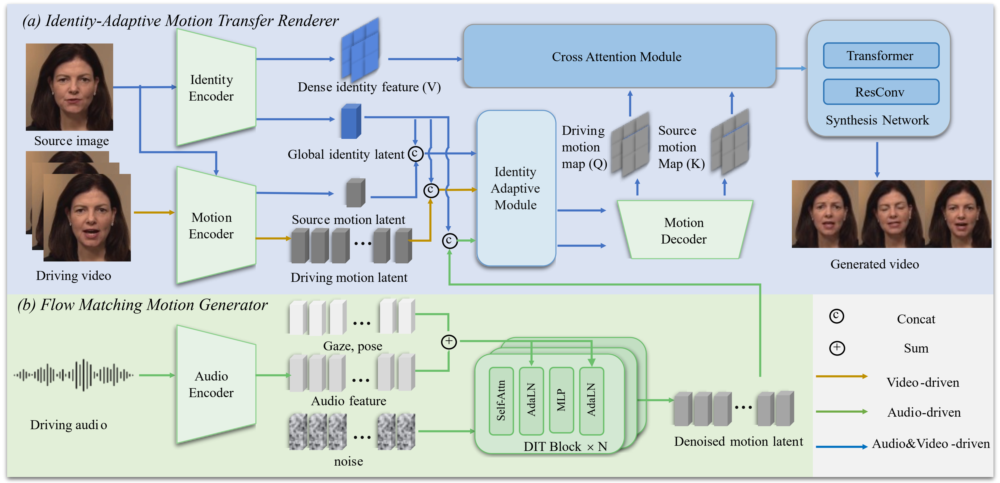

Talking face generation aims to synthesize realistic speaking portraits from a single image. We present IMTalker, a novel framework that achieves efficient and high-fidelity talking face generation through implicit motion transfer. The core idea is to replace traditional flow-based warping with a cross-attention mechanism that implicitly models motion discrepancy within a unified latent space. We introduce an Identity-Adaptive Module to preserve speaker identity and a lightweight Flow-Matching Motion Generator for vivid implicit motion vectors. Experiments demonstrate that IMTalker surpasses prior methods in motion accuracy, identity preservation, and sync quality, achieving state-of-the-art performance.

Given a source image, IMTalker extracts identity and motion features. Driving motion is obtained via a Motion Encoder (video-driven) or a Flow-Matching Generator (audio-driven). These are processed by an Identity-Adaptive Module and fed into the Implicit Motion Transfer Module to render the final photorealistic image.
IMTalker generates vivid facial expressions synchronized with various audio inputs.
Sample 1
Sample 3
Sample 2
Sample 4
Reconstructing the video using its own driving video.
Driving a source identity with motion from a different person.
Explicit control over head pose and eye gaze while maintaining lip synchronization.
Pose Control
Gaze Control
Stable generation over long durations without artifact accumulation.
We compare IMTalker with state-of-the-art methods. Each video below shows a side-by-side comparison.
Comparison Sample 1
Comparison Sample 2
Comparison Sample 3
Comparison Sample 4
Comparison Sample 1
Comparison Sample 2
Comparison Sample 3
Comparison Sample 4
@article{imtalker2025,
title={IMTalker: Efficient Audio-driven Talking Face Generation with Implicit Motion Transfer},
author={Bo, Chen and Tao, Liu and Qi, Chen and Xie, Chen and Zilong Zheng},
journal={arXiv preprint arXiv:2511.22167},
year={2025}
}